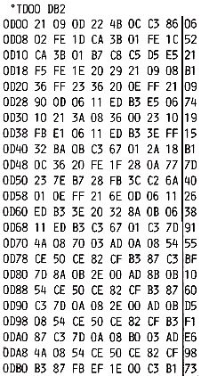

Nascom Journal |
September 1981 · Ausgabe 9 |
Es soll noch darauf hingewiesen werden, daß einige Besonderheiten des DMA durch die einfache Schaltung nicht benutzbar sind. So könnte der INT-Ausgang, nachdem ein Block (Länge programmierbar) übertragen wurde, ein Strobe Signal ausgeben. Zweitens könnte der Chip Select Eingang CE, während der DMA aktiv ist, auch als WAIT-Eingang dienen (siehe DMA Manual). Dieses Multiplexen ist wahlweise programmierbar. Für die hier gezeigte Anwendung sind die Optionen nicht notwendig und deshalb nicht in der Schaltung berücksichtigt.
Das Programm wird mit der kurzen Routine INIT gestartet. Dies ist nach jedem Monitorkaltstart und nach den Monitorroutinen „Read“, „Write“ und „Generate“ zu wiederholen. Dabei wird in die Sprungtabelle des Nascommonitors die Startadresse der DMACRT Routine abgelegt. Am Anfang von DMACRT wird geprüft, ob zum Bildschirm „Backspace“ oder „Cursor Home“ ausgegeben wird. Diese beiden Funktionen werden noch von der Original-CRT-Routine erledigt. Die DMACRT ist im wesentlichen genauso aufgebaut wie das Original (siehe Assemblerlisting T2 oder T4). Nur dort, wo die CPU das Verschieben des Bildschirmspeichers vornimmt, wird nun der DMA mit folgender Programmsequenz programmiert:
LD C,DMA1 LD B,TABLAENGE LD HL,TAB OTIR
wobei der Tabellenanfang in Reg.HL, die Tabellenlänge in Reg.B und die I/O Adresse des DMA in Reg.C geladen wird. In der Tabelle stehen eine Reihe von Kommandowörtern und Parametern, mit denen der DMA programmiert wird, Nach der Ausgabe des letzten Kommandoworts durch den OTIR-Befehl übernimmt der DMA die Kontrolle über den Bus und verschiebt den Bildschirmspeicher. Nach dem Abarbeiten von „Clear Screen“, „New Line“ oder Ausgabe eines Zeichens zum Bildschirm kehrt das Programm in das Original CRT-Programm zurück und arbeitet wie gewohnt weiter.
DMACRT ist in der vorliegenden Form nur mit Nasbug T4 lauffähig, da es Teile der Monitor CRT-Routine von T4 benutzt. Für T2 User ist die Änderung minimal:
340 PUSH AF 350 PUSH BC 360 PUSH DE 370 PUSH HL
Von Nassys liegt mir leider kein Assemblerlisting vor. Sollte jemand an DMACRT Interesse zeigen und ein Assemblerlisting zur Verfügung stellen, werde ich eine Anpassung an Nassys vornehmen.

Im Heft 1/80 ist das Spiel Pirhanas abgedruckt. Damit der Punktezähler richtig funktioniert, muß in Adresse 10FA statt EE der Wert FE eingetragen werden.
Ulrich Wallis, Heddesheim
| Seite 7 von 28 |
|---|